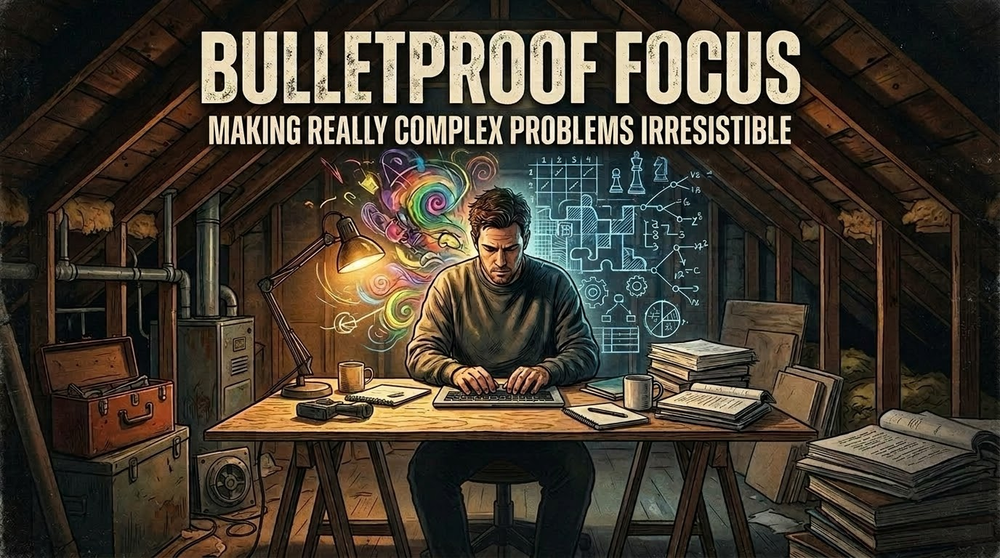

Reclaiming the Mind in a Dangerously Noisy World

Our age of continuous distraction only serves to camouflage some of the most complex problems society has ever faced. My work focuses on flipping that script: making hard problems so irresistible that we automatically focus deeply to find meaningful solutions.
Currently, I am writing Bulletproof Focus, a book of practical methods for resisting the tyranny of the trivial, and cultivating the concentration to achieve rare and valuable results.
Selected Writing
Newsletter
Join readers receiving weekly thoughts on reclaiming attention and updates on the book.